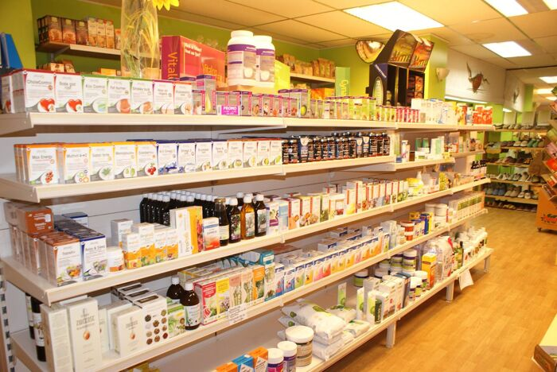
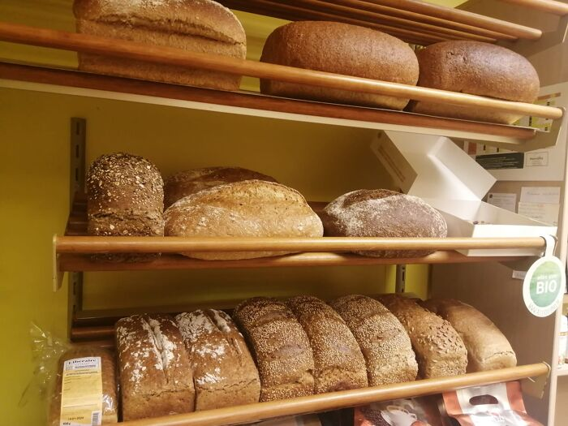

Uitgebreid assortiment
Onze winkel biedt een uitgebreid assortiment aan biologische en natuurlijke producten, variërend van droge kruidenierswaren tot natuurlijke verzorgingsproducten en milieuvriendelijke huishoudelijke artikelen.

Vers brood
Ontdek ons vers biologisch brood, exclusief verkrijgbaar op vrijdag na bestelling! Geniet van een uitgebreid assortiment, van zachte volkorenbroden tot smaakvolle zuurdesems. Kom langs of bel ons om jouw favoriete brood voor het weekend te bestellen!

Contact
Heb je nog vragen of wil je meer informatie? Aarzel niet om contact met ons op te nemen.